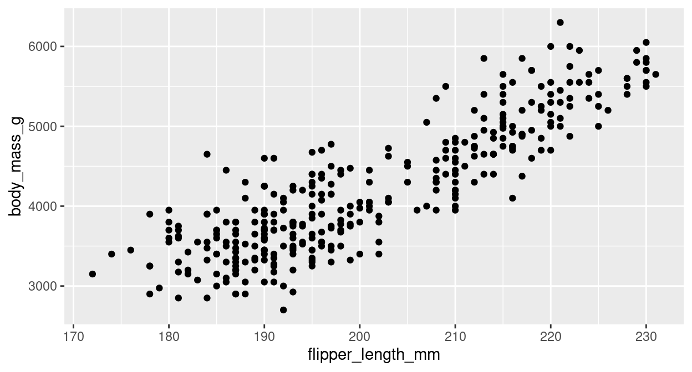
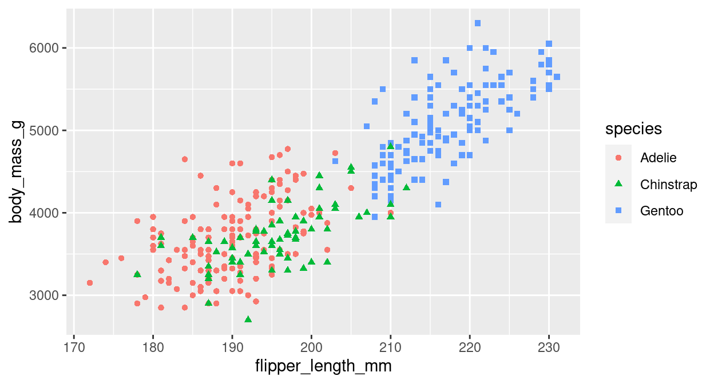
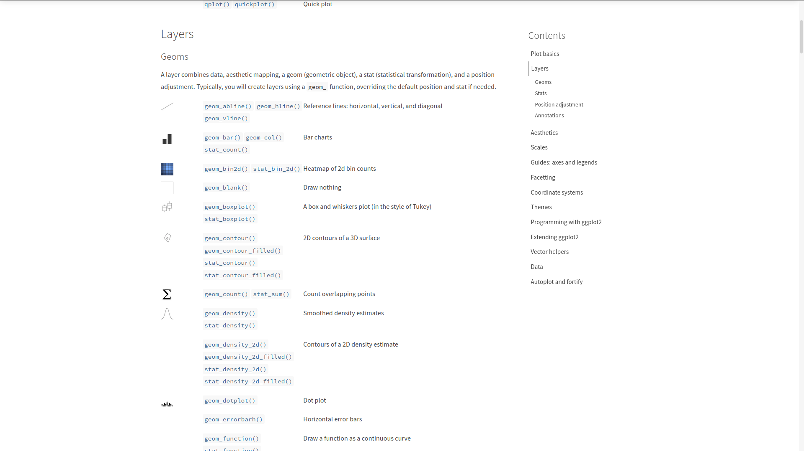

Configuration
Merci d’installer les packages suivants pour suivre ce tutoriel
install.packages("ggplot2")
install.packages("palmerpenguins")
install.packages("dplyr")
install.packages("tibble")library(ggplot2)
library(palmerpenguins)
library(tibble)Présentation de ggplot2
ggplot2 est un package créé par Hadley Wickham et Winston Chang pour implémenter dans R la vision développée par Leland Wilkinson dans The Grammar of Graphics (Statistics and Computing) de la conception de graphiques.
Le but est de fournir une approche unique pour produire quasiment toute valorisation graphique de données que l’on peut trouver dans des revues scientifiques, les journaux, dans l’analyse statistique ou la data visualisation.
Ce package s’inscrit aujourd’hui dans R par le framework tidyverse qui propose une approche cohérente entre l’importation et la préparation des données, leur analyse et leur valorisation.

le tidyverse
Présentation des datasets
Palmer Penguins
Le dataset palmerpenguins contiennt des mesures de tailles pour 3 espèces de pingouin observées sur 3 îles de l’archipel Palmer en Antarxtique

Les pingouins de l’archipel de Palmer. Artwork by [@allison_horst](https://www.github.com/allisonhorst).
Ces données ont été collectées entre 2007 et 2009 par Docteur Dr. Kristen Gorman avec le programme de recherche écologique à long terme de la station Palmer, une partie du réseau de recherche écologique à long terme des Etats Unis. les données sont diffusées sous la licence CC0 license (“No Rights Reserved”) en accord avec la politique data de la station Palmer.
Le dataset palmerpenguins::penguins dataset contient 8 variables sur 344 pingouins (dont 333 observations complètes). Pour obtenir plus d’info sur les variables, vous pouvez taper ?penguins.
glimpse(penguins)## Rows: 344
## Columns: 8
## $ species <fct> Adelie, Adelie, Adelie, Adelie, Adelie, Adelie, Ade…
## $ island <fct> Torgersen, Torgersen, Torgersen, Torgersen, Torgers…
## $ bill_length_mm <dbl> 39.1, 39.5, 40.3, NA, 36.7, 39.3, 38.9, 39.2, 34.1,…
## $ bill_depth_mm <dbl> 18.7, 17.4, 18.0, NA, 19.3, 20.6, 17.8, 19.6, 18.1,…
## $ flipper_length_mm <int> 181, 186, 195, NA, 193, 190, 181, 195, 193, 190, 18…
## $ body_mass_g <int> 3750, 3800, 3250, NA, 3450, 3650, 3625, 4675, 3475,…
## $ sex <fct> male, female, female, NA, female, male, female, mal…
## $ year <int> 2007, 2007, 2007, 2007, 2007, 2007, 2007, 2007, 200…Les concepts clefs
Pour construire un graphique avec ggplot2, il faut définir plusieurs éléments :
la donnée : ggplot2 permet de travailler sur des vecteurs, des dataframes, des tibbles, ou des données spatiales ;
le mapping : on définit dans l’aesthetic (ou aes) le mapping, c’est à dire ce que l’on veut représenter qui dépend des variables (quelle variable sur l’axe x, sur l’axe y, quelle variable pour définir une graduation de couleurs…) ;
les paramètres : on définit les autres paramètres qui dépendent de constantes (par exemple : je veux que toutes mes lignes soient rouge ou de taille 2 pixels) ;
le layer (“forme géométrique”) : on définit sous quelle représentation graphique on représente les paramètres précédents. Sous
ggplot, ces fonctions sont de la formegeom_XX;
L’écriture type d’un graphique est donc:
ggplot(data = <DATA>) +
<FORME_GEO>(mapping = aes(<MAPPINGS>),...=<PARAMS>)On va ensuite pouvoir enrichir avec des fonctions supplémentaires. Chaque fonction s’enchaine avec des + comme les pipe.
ggplot(data = <DATA>) +
<FORME_GEO>(mapping = aes(<MAPPINGS>),...=<PARAMS>)+
<FONCTION1>+
...Le mapping
Les paramètres du mapping
Dans l’exemple qui suit, la représentation géographique utilisée est le nuage de points geom_point. D’autres types de représentations géographiques sont présentés dans la partie suivante.
L’aesthetic sert à identifier les variables que l’on souhaite représenter. Par exemple, si l’on souhaite représenter la longueur de la nageoire en fonction du poids des pingouins :
ggplot(data = penguins, aes(x = flipper_length_mm, y = body_mass_g)) +
geom_point()
De plus, la fonction aes admet d’autres arguments qui permettent de modifier l’apparence du graphique selon une 3ème variable du jeu de données. Par exemple :
- colour : la couleur,
- shape : la forme,
- size : la taille,
- alpha : la transparence,
- fill : le remplissage ;
ggplot(data = penguins) +
geom_point(aes(x = flipper_length_mm,
y = body_mass_g,
color = species,
shape = species)
)
Les “autres” paramètres
Il est possible de spécifier des paramètres qui seront valables pour l’ensemble du graphique. On retrouve entre autre les mêmes paramètres proposés dans l’aes, mais il faut alors les passer en dehors de l’aesthetic.
Par exemple, si l’on souhaite modifier la transparence et la taille de l’ensemble des points du graphique précédent:
ggplot(data = penguins) +
geom_point(aes(x = flipper_length_mm,
y = body_mass_g,
color = species,
shape = species),
size = 2,
alpha = 0.7)Pour choisir et modifier facilement les couleurs d’un graphique, il existe un addin développé par Dean Attali: Colour Picker Il est installable comme n’importe quel package. Pour plus d’informations: https://github.com/daattali/colourpicker
A vous de jouer !
Prenez le dataset penguins et réaliser un nuage de point des pinguouins avec :
- en abscisse la longueur du bec
bill_length_mm - en ordonnée l’épaisseur du bec
bill_depth_mm - une forme des points en fonction de l’espèce
species - une couleur en fonction du sexe
sex
ggplot(data = penguins) +
geom_point(aes(x = bill_length_mm,
y = bill_depth_mm,
color = sex,
shape = species),
size = 2,
alpha = 0.7)Les différents layers possibles
Vous avez deux moyens pour explorer les différentes formes de valorisations (layers) possibles avec R.
Le site de ggplot2 vous donne accès à l’ensemble des layers possibles et vous donne plusieurs exemples d’utilisation, vous donne aussi les paramètres possibles dans l’aes de chacun.


Le site from data to viz vous permet d’avoir une entrée en fonction des type de données que vous souhaitez valoriser